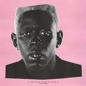

2019
(Clic para más detalles)Lanzamiento: 17 de mayo de 2019
Productor: Tyler, The Creator
IGOR narra el ciclo de un enamoramiento obsesivo hasta la aceptación. Es un viaje sonoro multimedia que explora temas de identidad y transformación.
Funciona como introduccion a la historia que nos trata de contar tyler en todo el album, esta es el tema de nuestro personaje IGOR un uso de sintetizadores y vocales de Lil Uzi repitiendo "he's coming" o "Riding around town the gonna feel this one"
El mayor hit. Incluye a Playboi Carti. Habla sobre la dependencia emocional una muy fuerte al punto de rogar que no se vaya pues es nuestra culpa. Y la necesidad de respuestas tambien el como la otra persona no quiere tener esa conversacion evadiendolo
Tyler se questiona tanto su estado mental como sus sentimientos, a su vez de como el cree que lo que siente es amor pero talvez sea solo la curiosidad por las acciones que realiza la otra persona
Un pequeño interludio se traduce como "Exactamente de lo que estas huyendo es lo que terminas persiguiendo", haciendo alucion a las posibles tendencias ciclicas que tiene nuestro personaje conforme a sus relaciones
Ya lo intentamos todo, se acaba el tiempo y sentimos que nos ahogamos al no poder hacer que esa persona nos ame, pero talvez el no lo quiere aceptar.
A diferencia de la cancion anterior esta tiene un ritmo mas agresivo mostrando la obsecion que siente por esta persona, hay un tercero en la relacion y tendremos que hacer uso de la nueva varita magica(un arma) para ponerlo entre las cuerdas y escoga entre los 2 Esto no es amor, es una obsecion.
Aqui se rompe la obsecion y "abrimos los ojos" alejandonos de esa persona que es tan peligrosa como un arma cargada, pero en partes se vuelve vulnerable pidiendo que no se vaya o el como el esta aqui para la otra persona.
La cancion que muestra que tan vulnerable y el como estaba a la voluntad de la otra persona dispuesta a hacer cualquier cosa que sea necesaria para que se quede pero en cierta manera dandose cuenta en que nunca hubo una voluntad propia todo fue impulsado por esa obsecion, con la participacion de kanye que actua como una voz interior para al final volver a nuestros sentidos.
En lo personal mi favorita junto a gone gone/ thank you; Esta cancion es basicamente un levanton al ego de tyler ya no somos la marioneta de la persona ahora cuando pregunten nuestro nombre es IGOR, se repite mucho la frase "I see the light" mostrando el como ya abrio los ojos por eso se siente tan frenetica es basicamente una explosion para no mostrar la vulnerabilidad, Al final nos pregunta que es mas dificil dejar ir o aceptar las cosas como son.
Mi otra cancion preferida del album, en GONE GONE tyler repite constantemente el como el amor ya se fue y de eso trata ya se termino todo aunque quedamos marcados y reconoce el como el se confundio talvez las señales no significaban lo mismo para ambos. En THANK YOU funciona como un agradecimiento por el tiempo, el amor y la felicidad que se le dio, todo termino bien no?
A pesar de tyler mostrar que ya no le afecta la perdida por la otra persona y el como ya lo supero solo es una mentira para si mismo para no mostrar que tan herido esta por lo sucedido, en la letra el pide saber a donde ir o si puede tener su corazon devuelta mostrando que no lo a superado aun a pesar de en las ultimas 2 canciones aparentar que si.
Tyler no lo a superado aun persigue el amor de esa persona, aun quiere estar a su lado talvez ya no como amantes si no como amigos pero eso es porque el no puede dejar ir eso lo conecta con la cancion EXACTLY WHAT YOU RUN FROM YOU END UP CHASING volviendo esto un ciclo que no beneficia a ninguno y tyler es el unico herido...